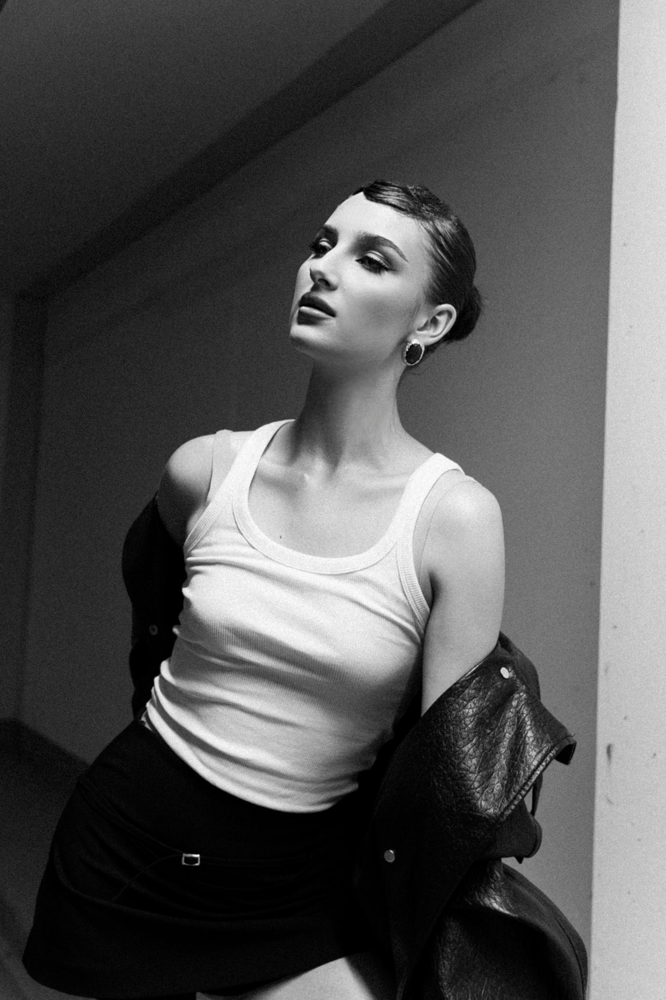
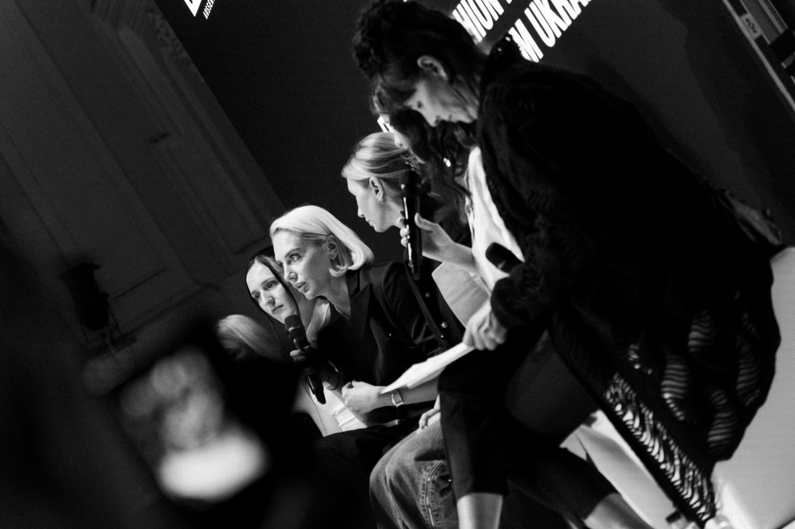
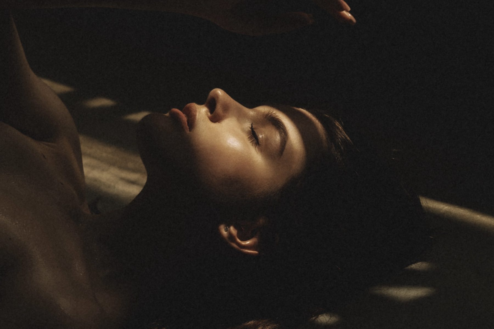

Images with
intention.
I help brands and private clients communicate their values through premium visual content, with a clear point of view and a refined aesthetic.

People / Portraits
Events / CorporateA thoughtful eye.
A clear story.
I’m Kateryna Yarova, a commercial and portrait photographer based in Vienna. For over seven years, I’ve helped brands and private clients communicate their values through premium visual content.
In three years of working in Austria, my photographs have appeared in Forbes Austria and on advertising billboards in Villach. My regular clients include the automotive group Auto-Keglovits, the event platform Barvy and popular Vienna restaurants Buffalino, Malka and Chaichona.
I work exclusively to your brief and always look for the best ideas and solutions for our collaboration. I’m ready to be your reliable partner in creating images that attract attention and stay in memory.

Made for your
point of view.
Commercial & brand
Campaigns, brand shoots and visual content tailored to your identity and audience.
02Food & interiors
Restaurant, dish and interior photography that captures the character of a place.
03Events & corporate
Corporate events, parties, birthdays and moments worth keeping.
04Portraits & street
Personal portrait sessions, street photography and concept photo days.
05Automotive
Vehicle and advertising photography for automotive businesses and campaigns.
Clear process.
Considered results.
- I work officially and can issue an invoice to any company
- Fast, quality work: material delivered within 2 weeks
- 30–35 edited photographs for every hour of shooting
- Corporate events, parties and birthdays
- Personal portrait and street shoots
- Shoots for brands, built around your request
Let’s make
something matter.
- Phone
- +43 676 5812849
- @ph.yarova
Have a project in mind? Tell me what you need, and we’ll find the right visual approach together.
Write on Instagram